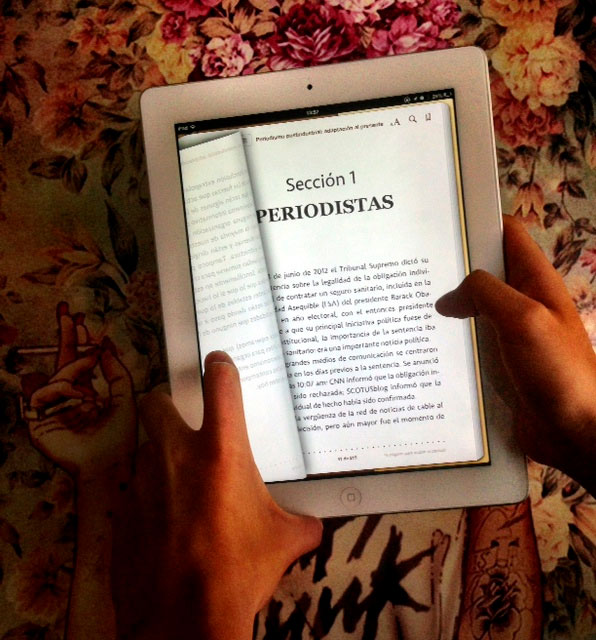
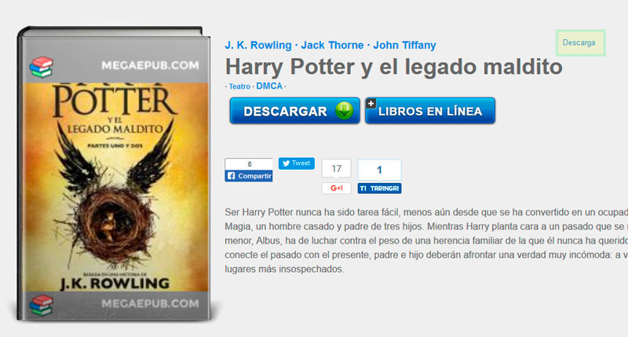

Hoy en día con la disponibilidad de la información al alcance de la mano es mucho mas fácil obtener información que antes se nos dificultaba enormemente: libros, tratados, estudios o simplemente temas que nos parecían importantes, pero necesitábamos de recurrir a una biblioteca o instituto especializado para tener acceso a ellos.
Cada vez es mas frecuente recurrir a una pantalla de ordenador o teléfono móvil para poder visualizar información importante, entre ella la información que antes se encontraba unicamente impresa en papel. Es mucho mas fácil unicamente leer un extracto o la sección correspondiente al tema que nos interesa y no el libro completo. Pero esto tiene sus desventajas, nos permite conocer los detalles pero no poner plena atención a el entorno.
Pero eso no es excusa para abandonar el gusto por la lectura, mas contando hoy en día con muchísimas herramientas que facilitan el acceso a la información y hacen mucho mas cómodo la actividad de la lectura.
Si eres de las personas que les gusta la lectura puedes recurrir a medios digitales para comprar libros, descargar libros de acceso público o recurrir a comunidades que comparten este tipo de obras escritas. Hoy en día me gustaría recomendar un sitio para la descarga de libros en formato epub, el formato mas generalizado en el campo de los ebooks (libros electrónicos) así como un par de aplicaciones por demás interesantes y que salen un poco fuera de lo común.
Descargando libros
Referente a la descarga de libros podria recomendar un sitio muy interesante con miles de títulos que pueden ser visualizados en lectores Kindle, tablets, PC y teléfonos móviles
http://www.megaepub.com/
Megaepub es un sitio que permite el acceso a miles de obras de diferentes categorías, novelas, ciencia ficción, fantasía, libros motivacionales y también libros académicos en medicina, psicología, etc.
Algo muy importante a tomar en cuenta en Megaepub es saber como descargar los libros, pues puede ser un poco confuso y llevar a sitios de terceros sin darnos cuenta. Para descargar un libro sin inconvenientes es necesario seleccionar la opción que aparece en la siguiente imagen.
Debemos seleccionar el descargar con las letras pequeñas, que he remarcado con el rectangulo amarillo con lineas verdes, de otro modo si se selecciona el descargar presente en el botón grande se irá a publicidad de terceros.
Aplicaciones de Lectura
Si te gusta un poco el estilo retro y deseas hacer uso de un lector con apariencia de libro, te recomiendo iReader, es sin duda uno de las mejores aplicaciones para equipos android y ademas tienes la posibilidad tanto de comprar libros como agregar los previamente descargados de otros sitios y clasificarlos por genero en tu librero.
No olvidemos que le conocimiento es poder y no hay excusas para no seguir aprendiendo.